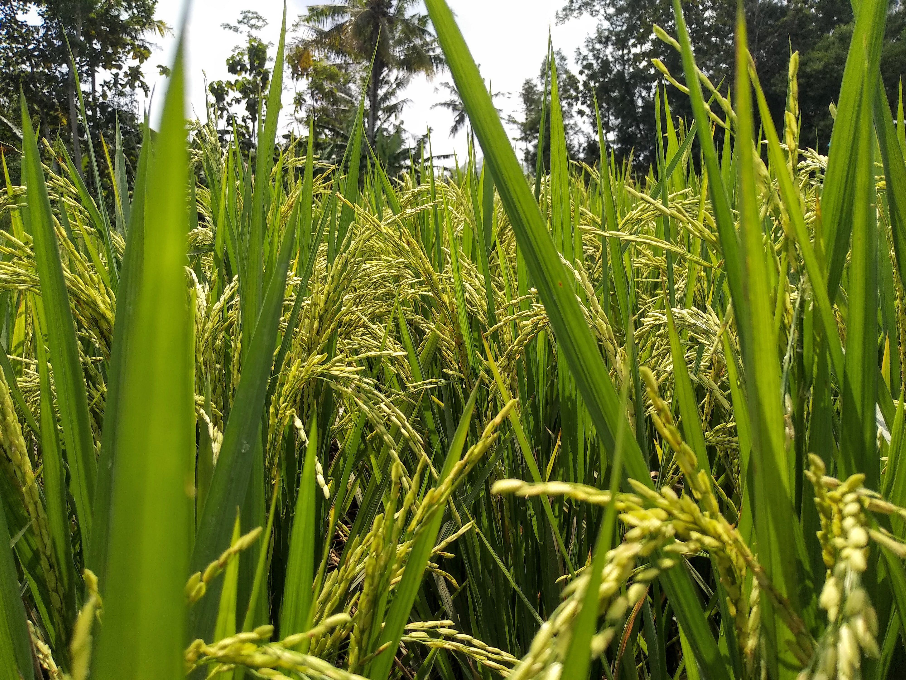
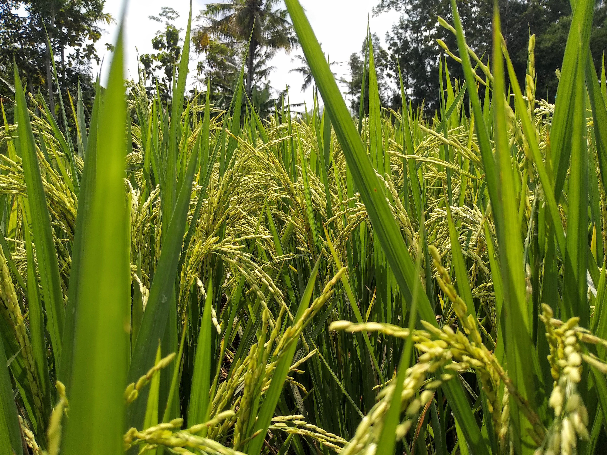
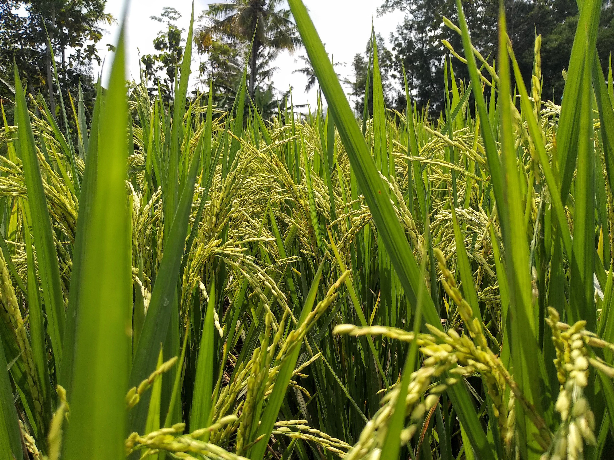

Welcome to Agrimart, your one-stop destination for connecting farmers directly with customers and markets. We believe in empowering farmers and promoting sustainable agriculture
. Our platform allows farmers to showcase their produce and connect with consumers, creating a seamless and efficient marketplace.At Agrimart, we're dedicated to bridging the gap between farmers and customers, ensuring fresh
and high-quality products reach your table. Join us in supporting local farmers and enjoying the freshest produce.Welcome to AgrwMart - your one-stop destination for connecting farmers directly with customers! We're thrilled to introduce you to a revolutionary platform that's changing the way agricultural products are bought and sold. At AgrwMart, we're committed to empowering farmers and fostering a stronger, more sustainable agricultural ecosystem. *Our Vision:* Our vision is to bridge the gap between farmers and consumers, ensuring a fair and transparent marketplace for everyone. We believe in the power of technology to transform traditional agricultural practices, making them more efficient, profitable, and accessible. AgrwMart was born out of a deep understanding of the challenges faced by both farmers and consumers in the current agricultural landscape.
*Empowering Farmers:* AgrwMart is dedicated to empowering farmers by providing them with a direct route to market their products to a wide range of consumers. We understand that many farmers struggle with intermediaries and middlemen, often receiving inadequate compensation for their hard work. By offering a platform that allows farmers to showcase their produce and set their prices, we're cutting out the middlemen and giving farmers the opportunity to earn a fair income for their efforts. *Quality Assurance:* We take quality seriously. All the products listed on AgrwMart undergo a rigorous screening process to ensure that consumers receive only the freshest and finest produce. We work closely with farmers to implement best practices in cultivation, harvesting, and packaging, ensuring that the products you receive are of the highest quality. From farm to table, we're committed to maintaining the integrity of the products you purchase. *Variety and Choice:* At AgrwMart, you'll find an extensive selection of agricultural products ranging from fresh fruits and vegetables to grains, dairy, and more. Our platform celebrates the diversity of agricultural produce while giving consumers the freedom to choose products that align with their preferences and values. Whether you're looking for organic, locally sourced, or specialty items, AgrwMart has something for everyone. *Transparency and Traceability:* We believe that transparency builds trust. With AgrwMart, you'll have access to detailed information about the farmers behind the products, their cultivation practices, and the journey of the produce from the farm to your doorstep. Our commitment to traceability ensures that you know exactly where your food comes from, fostering a stronger connection between consumers and farmers. *Convenience and Accessibility:* Shopping on AgrwMart is easy and convenient. Our user-friendly interface allows you to browse through various categories, view product details, and make purchases with just a few clicks. With the option for doorstep delivery, you can enjoy the convenience of fresh, locally sourced produce without leaving your home. Additionally, our mobile app ensures that you can access AgrwMart anytime, anywhere. *Supporting Local Economies:* By choosing AgrwMart, you're not only getting high-quality products but also contributing to local economies. We prioritize working with local farmers and producers, which in turn supports livelihoods and fosters economic growth in rural communities. Your purchases have a direct impact on the farmers' well-being and the sustainability of local agricultural practices. *Community Building:* AgrwMart is more than just a marketplace; it's a community of farmers, consumers, and agricultural enthusiasts coming together to celebrate and support the world of farming. Through our platform, you'll have the opportunity to engage with farmers, learn about their stories, and gain insights into the challenges and triumphs of modern agriculture. In conclusion, AgrwMart is dedicated to revolutionizing the way agricultural products are bought and sold. We're committed to empowering farmers, ensuring quality and transparency, and providing consumers with a convenient way to access fresh, locally sourced produce. Join us in our mission to create a sustainable, thriving agricultural ecosystem that benefits everyone involved. Welcome to AgrwMart, where farmers and consumers connect, and quality meets convenience.
